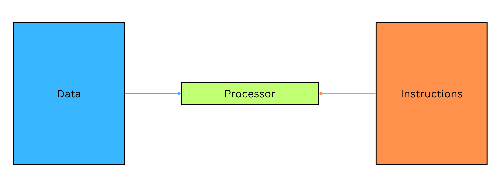
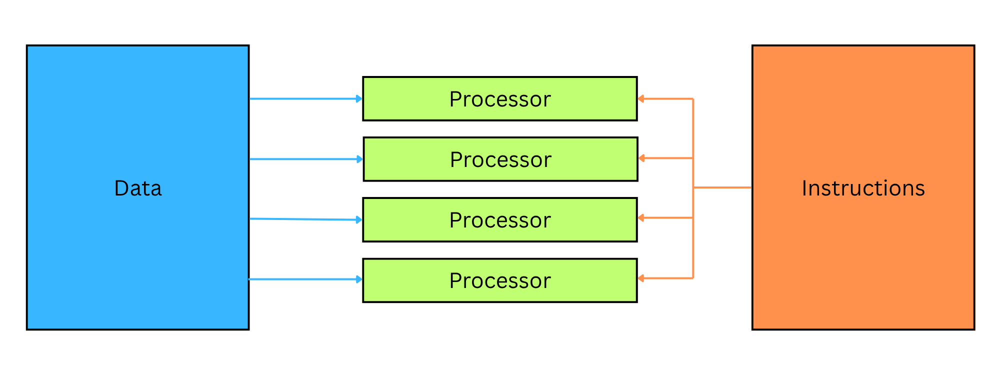
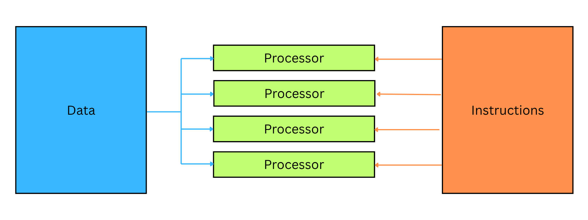
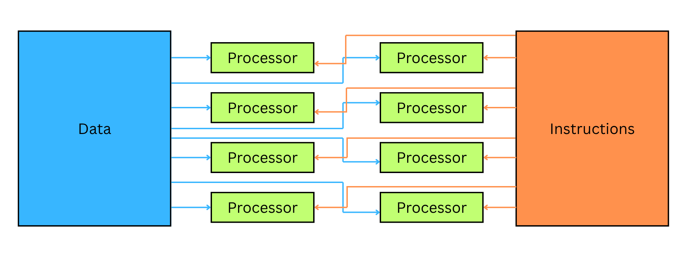
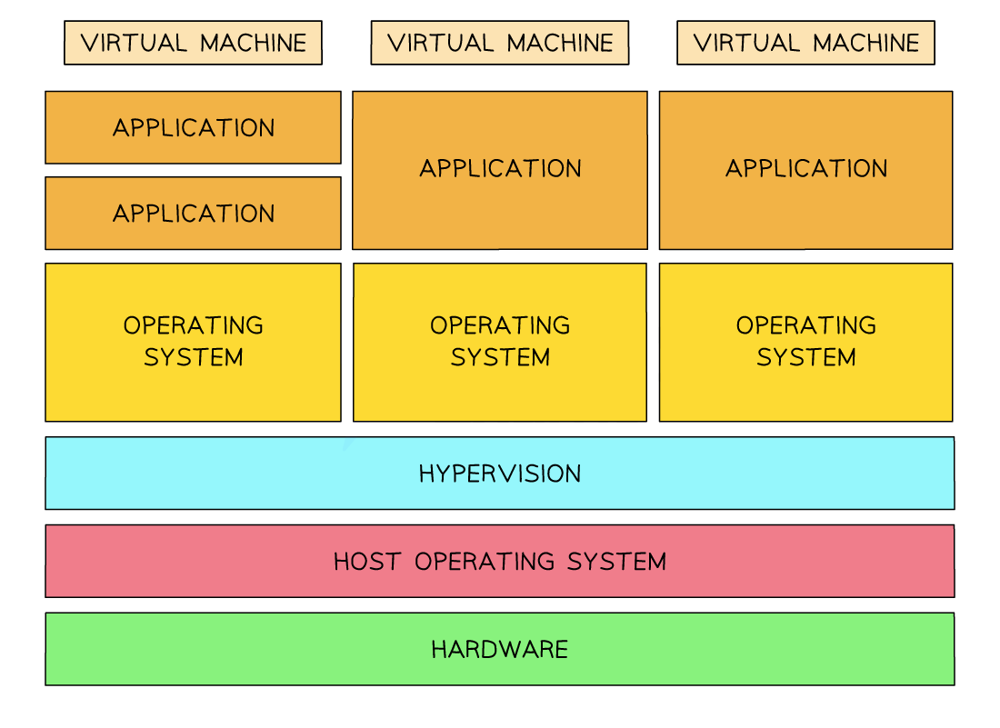

Processor Types
- A computer processor will have an instruction set that it can use to execute programs
- This will vary from one processor to the next
- There are 2 types of processors:
- Reduced Instruction Set Computer (RISC)
- Complex Instruction Set Computer (CISC)
RISC
- Reduced Instruction Set Computer (RISC) consists of a smaller instruction set with more simple instructions
- Each instruction takes one clock cycle to execute which makes it more suitable for pipelining
- A RISC program may require more instructions because each instruction performs a simpler operation
- Has fewer addressing modes
- Is usually used in smartphones and tablets
CISC
- Complex Instruction Set Computer (CISC) consists of a larger instruction set which includes more complex instructions
- As the instructions are more complex, they can take more than one clock cycle to execute
- Has fewer general-purpose registers
- Instructions take up less space in memory
- Is usually used in laptops and desktop computers
What’s the difference between RISC & CISC?
| Feature | RISC | CISC |
|---|---|---|
| Instruction set size | Small | Large |
| Instruction complexity | Simple | Complex |
| Clock cycles per instruction | One | Multiple |
| Pipelining suitability | Well suited | Less suited |
| Compiler complexity | More complex | Less complex |
| Addressing modes | Fewer | More |
| General-purpose registers | More | Fewer |
| Power usage | Lower | Higher |
| Cost | Lower | Higher |
| Memory use | More (due to more instructions) | Less (fewer instructions) |
| Typical devices | Smartphones, tablets | Laptops, desktops |
- A program that has been written for a RISC processor won’t work on a CISC processor and vice versa
- A program that has been written for a RISC processor won’t necessarily work on another RISC processor as they may have different instruction sets
Interrupt handling on RISC & CISC
- The concept of interrupt handling is covered in [[4.1 Types of Software & Interrupts#Interrupts|Chapter04-Interrupt]]
| Feature | CISC | RISC |
|---|---|---|
| Instruction complexity | CISC has complex instructions, often with built-in support for interrupt routines | RISC has simple, fixed-length instructions, interrupt handling done using simpler routines |
| Interrupt handling | Often uses microcode and dedicated hardware instructions to manage interrupts efficiently | Uses software-based interrupt handlers, managed through general-purpose registers and simple instructions |
| Context switching | May have hardware support to save and restore processor state automatically | Typically handled in software, giving more control but requiring more instructions |
| Speed of response | Generally faster interrupt handling due to built-in support | Slower, but more flexible and consistent across all instructions |
| Instruction cycle impact | CISC can handle multiple tasks in a single instruction, including context saving | RISC uses multiple simple instructions, giving the OS greater control |
- CISC processors often have dedicated instructions for handling interrupts, making the process more efficient but less flexible
- RISC processors rely more on software routines, making interrupt handling slightly slower, but simpler and more predictable
- Both architectures aim to respond to interrupts quickly and resume execution correctly, but they do so using different design philosophies
Quiz
Reduced Instruction Set Computers (RISC) and Complex Instruction Set Computers (CISC) are two types of processor. Tick (3) one box in each row to show if the statement applies to RISC or CISC processors.[2]
| Statement | RISC | CISC |
|---|---|---|
| uses a smaller instruction set | ||
| uses single-cycle instructions and limited addressing modes | ||
| uses fewer general-purpose registers | ||
| uses both hardwired and micro-coded control unit | ||
| uses a system where cache is split between data and instructions |
Answer
| Statement | RISC | CISC |
|---|---|---|
| uses a smaller instruction set | ✓ | |
| uses single-cycle instructions and limited addressing modes | ✓ | |
| uses fewer general-purpose registers | ✓ | |
| uses both hardwired and micro-coded control unit | ✓ | |
| uses a system where cache is split between data and instructions |
✓ |
Pipelining
What is pipelining?
- Pipelining is the process of carrying out multiple instructions concurrently
- Each instruction will be at a different stage of the fetch-decode-execute cycle
- One instruction can be fetched while the previous one is being decoded and the one before is being executed
- In the case of a branch, the pipeline is flushed
- This table shows which stage each instruction is at during each step:
| Fetch | Decode | Execute | |
|---|---|---|---|
| Step 1 | Instruction A | ||
| Step 2 | Instruction B | Instruction A | |
| Step 3 | Instruction C | Instruction B | Instruction A |
| Step 4 | Instruction D | Instruction C | Instruction B |
- While one instruction is being executed, the next instruction will be decoded and the following instruction will be fetched
Pipelining in RISC processors
- RISC (Reduced Instruction Set Computer) processors are designed for pipelining efficiency
- Key features that support pipelining:
- Each instruction takes one clock cycle (or close to it)
- Fixed-length instructions, making decoding easier
- Limited instruction set, reducing complexity and stage duration
- A large number of general-purpose registers, reducing memory access
- Registers are fast, temporary storage inside the CPU
- RISC processors rely heavily on registers for operand storage rather than accessing RAM
- Intermediate values are stored in registers between stages
- Register usage reduces memory bottlenecks, allowing pipelining to run smoothly
- Example:
- Instruction A loads value into Register R1
- Instruction B adds R1 + R2 and stores result in R3
- All of these can be done efficiently within the CPU using registers
Benefits of pipelining
| Advantage | Explanation |
|---|---|
| Increased throughput | Multiple instructions handled at once |
| Better use of CPU components | Fetch, decode, and execute units are all in use simultaneously |
| Reduced idle time | No waiting between stages |
| Faster execution of instruction stream | Even if individual instructions don’t run faster |
Quiz
Describe the process of pipelining during the fetch-execute cycle in RISC processors.[4] Answer
- Instructions are divided into subtasks / 5 stages [1 mark]
- … Instruction fetch / IF, Instruction decode / ID, operand fetch / OF, opcode/instruction execute IE, result store / write back result / WB [1 mark]
- Each subtask is completed during one clock cycle [1 mark]
- No two instructions can execute their same stage at the same clock cycle [1 mark]
- The second instruction begins in the second clock cycle, while the first instruction has moved on to its second subtask [1 mark]
- The third instruction begins in the third clock cycle while the first and second instructions move on to their second and third subtasks, respectively, etc. [1 mark]
Architecture types
What is a computer architecture?
- A computer architecture is the design and structure of a computer system
- It describes how it fetches, processes, and stores data and instructions
- It defines how components like the CPU, memory, and input/output devices work together to execute programs
- Each architecture is categorised as:
- S ingle or M ultiple Instruction stream
- S ingle or M ultiple Data stream
SISD – Single Instruction, Single Data
| Description | Key Features |
|---|---|
| One processor executes one instruction on one data stream at a time | Traditional serial (non-parallel) architecture |
| Used in basic, single-core processors | Step-by-step processing |
Example: Classic desktop CPU running one task at a time

Single Instruction, Single Data DiagramSIMD – Single Instruction, Multiple Data
| Description | Key Features |
|---|---|
| One instruction is applied to multiple pieces of data at once | Useful for parallel processing |
| All processing units perform the same operation in parallel | Ideal for graphics or scientific computation |
Example: GPU operations, image processing

Single Instruction, Multiple Data DiagramMISD – Multiple Instruction, Single Data
| Description | Key Features |
|---|---|
| Multiple processors execute different instructions on the same data | Very uncommon in practice |
| Used in specialised systems for fault tolerance | Each unit checks the same input differently |
Example: Redundant systems in safety-critical environments

Multiple Instruction, Single Data DiagramMIMD – Multiple Instruction, Multiple Data
| Description | Key Features |
|---|---|
| Multiple processors execute different instructions on different data sets | Most modern multi-core processors use this model |
| Allows full concurrent processing of independent tasks | Flexible and scalable for parallel programs |
Example: Multi-core CPUs, distributed systems, cloud computing

Multiple Instruction, Multiple Data DiagramSummary table
| Architecture | Instruction Stream | Data Stream | Used In |
|---|---|---|---|
| SISD | Single | Single | Standard sequential processors |
| SIMD | Single | Multiple | Vector processing (e.g. GPUs) |
| MISD | Multiple | Single | Specialised fault-tolerant systems |
| MIMD | Multiple | Multiple | Multi-core processors, parallel systems |
Massively parallel systems
What are massively parallel computers?
- Massively parallel computers are systems made up of thousands of processors working simultaneously to solve a single large problem
- Each processor executes part of a program, and results are combined to produce the final output
- They are designed to tackle complex, large-scale tasks in fields like
- Scientific research
- Weather simulation
- Cryptography
- AI
Key characteristics
| Feature | Description |
|---|---|
| Thousands of processors | Many processors are connected and work together to execute different parts of the same task |
| Shared or distributed memory | Each processor may have its own memory or access shared memory resources |
| High-speed interconnects | Processors are linked via fast communication pathways to share results |
| Data parallelism | Many data items can be processed at once — often using SIMD or MIMD |
| Task parallelism | Different processors may perform different tasks on different data sets |
| Specialised software | Requires software written to distribute the work efficiently across processors |
| Tightly coupled | Processors depend on one another and work collaboratively as a single system |
Massively parallel vs cluster computers
| Massively parallel computers | Cluster computers |
|---|---|
| Thousands of processors form a single tightly integrated system | Multiple independent systems networked together |
| Processors communicate continuously via shared architecture | Communication occurs via network, often loosely coupled |
| Acts like one machine with distributed processing | A group of co-operating systems (can be SIMD-based) |
| Higher performance, used for supercomputing tasks | More general-purpose or batch processing systems |
Link to computer architectures
- Massively parallel systems often use:
- SIMD: Apply one instruction to many data points simultaneously
- MIMD: Run different instructions on different data, fully independently
Virtual machines
What are virtual machines?
- Virtual machines (VMs) are entire operating systems running inside another operating system
- A user running Windows 11 could run a virtual machine of MacOS
- This would allow them to navigate the GUI of MacOS and install software on it
- Running a virtual machine helps access software that is only designed to run on specific operating systems
- VM management software includes a Hypervisor that monitors all activity happening inside the VM
Structure of several virtual machines running on a single piece of hardware

Cross-platform and forwards compatibility
- Not all software is designed to run on all operating systems
- Apple commonly makes software that only runs on MacOS for performance reasons
- A Windows user could run a virtual machine of MacOS and install the software they need
- Most software needs to be updated to work on the latest versions of operating systems
- A user running the latest release of Windows may need to run a virtual machine of a previous release of Windows to use an application that hasn’t received a forwards-compatibility update
In software testing
- VMs are a way to create isolated test environments, that leave the host operating system unaffected
- Isolated environments allow a developer to:
- Monitor the way their software affects system performance
- Test on a clean-slate system, while no other applications are running
- VM management software can create virtual machines that act like they have older hardware
- This allows developers to build software that can be run on older hardware so that more users can use the software
- A developer can test against various operating systems, such as MacOS, Linux and Windows, for greater compatibility
- In A Level Computer Science, intermediate code is generated through compilation and allows programs to run across different operating systems
Consequences
- VMs share the same system hardware as the host OS
- Over-use of VMs can exhaust the host OS of the system of CPU, hard disk and memory
- VM software such as VirtualBox can set maximum limits on system resources
- A low-specification machine could be configured to allocate only 1GB of memory and 20% of CPU
- A high-specification machine could afford up to 8GB of memory and 50% of the CPU
- Operating systems are commonly free to download, but require an activation payment to access all features